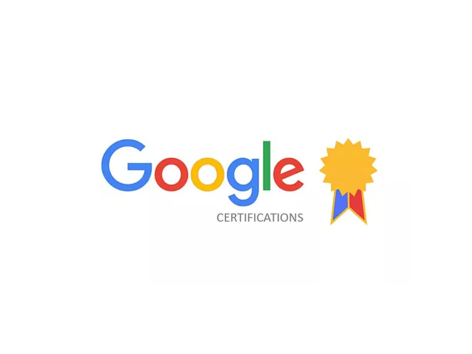

The Google Data Analytics Professional Certificate provided hands-on experience in data cleaning,
analysis, and visualization using tools such as SQL, Excel, R, and Tableau. It covered key
concepts in data-driven decision-making, statistical analysis, and business intelligence,
equipping me with the skills to extract meaningful insights from complex datasets.
The Google Foundations of Business Intelligence Certificate provided a comprehensive
understanding of BI principles, covering data modeling, ETL processes, and dashboarding for
strategic decision-making. Through hands-on learning with SQL, spreadsheets, and visualization
tools, it strengthened my ability to transform raw data into actionable business insights.

The Google Foundations of User Experience (UX) Design Certificate provided in-depth knowledge
of UX principles, including user research, wireframing, prototyping, and usability testing. It
strengthened my ability to design intuitive, user-centered digital experiences by applying
industry-standard tools such as Figma and Adobe XD.
The Introduction to User Experience Design Certificate
provided a foundational understanding of UX principles, emphasizing human-centered design,
usability, and interaction design. It enhanced my ability to create user-friendly digital
experiences by applying key UX methodologies, including user research, prototyping, and
evaluation techniques.
The JavaScript Algorithms and Data Structures Certificate provided in-depth
knowledge of JavaScript fundamentals, algorithmic problem-solving, and data structure
implementation. It strengthened my ability to write efficient code by applying concepts such as
recursion, object-oriented programming, and functional programming to solve real-world
computational challenges.
The Responsive Web Design Certificate equipped me with the skills to create
visually appealing, user-friendly websites that adapt seamlessly to various screen sizes and
devices. It covered core concepts of HTML, CSS, and responsive design principles, enabling me to
build modern, accessible, and responsive web applications.